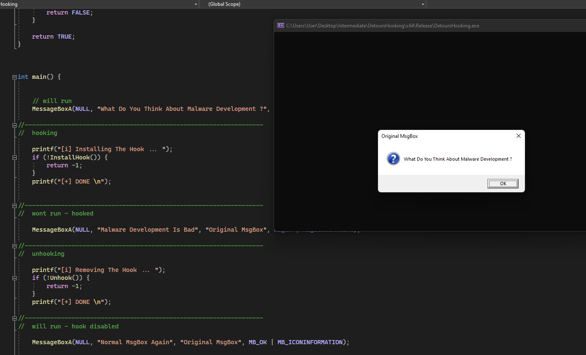
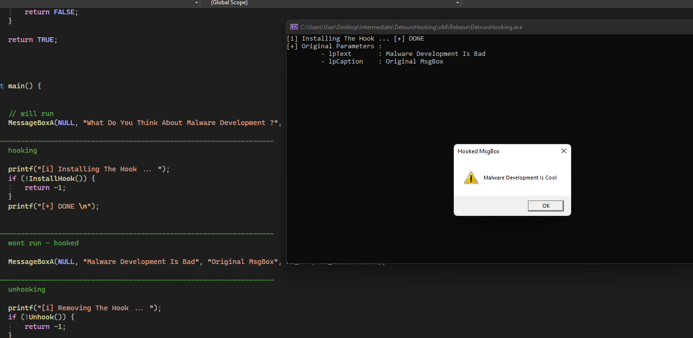
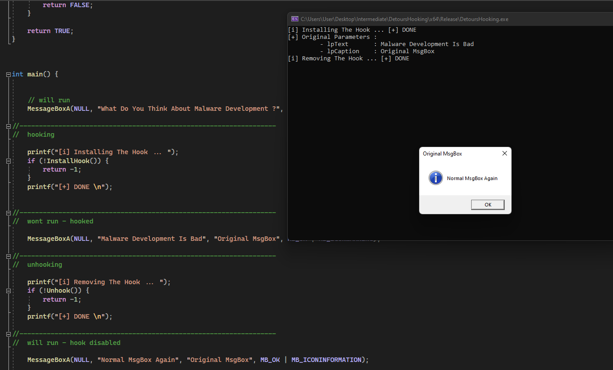

Introduction
The Detours Hooking Library, is a software library developed by Microsoft Research that allows for intercepting and redirecting function calls in Windows. The library redirect calls of specific functions to a user-defined replacement function that can then perform additional tasks or modify the behavior of the original function. Detours is typically used with C/C++ programs and can be used with both 32-bit and 64-bit applications.
The library's wiki page is available here.
Transactions
The Detours library replaces the first few instructions of the target function, that is the function to be hooked, with an unconditional jump to the user-provided detour function, which is the function to be executed instead. The term unconditional jump is also referred to as trampoline.
The library uses transactions to install and uninstall hooks from a targeted function. Transactions allow hooking routines to group multiple function hooks together and apply them as a single unit, which can be beneficial when making multiple changes to a program's behavior. It also provides the advantage of enabling the user to easily undo all changes if necessary. When using transactions, a new transaction can be started, function hooks added, and then committed. Upon committing the transaction, all function hooks added to the transaction will be applied to the program, as would be the case with unhooking.
Using The Detours Library
To use the Detours library's functions, the Detours repository must be downloaded and compiled to get the static library files (.lib) files needed for the compilation. In addition to that the detours.h header file should be included, this is explained in the Detours wiki under the Using Detours section.
For additional help adding .lib files to a project, review Microsoft's documentation.
32-bit vs 64-bit Detours Library
The shared code in this module has preprocessor code that determines which version of the Detours .lib file to include, depending on the architecture of the machine being used. To do so, the _M_X64 and _M_IX86 macros are used. These macros are defined by the compiler to indicate whether the machine is running a 64-bit or 32-bit version of Windows. The preprocessor code looks like the following:
// If compiling as 64-bit
#ifdef _M_X64#pragma comment (lib, "detoursx64.lib")#endif // _M_X64// If compiling as 32-bit
#ifdef _M_IX86#pragma comment (lib, "detoursx86.lib")#endif // _M_IX86The #ifdef _M_X64 checks if the macro _M_X64 is defined, and if it is, the code following it will be included in the compilation. If it is not defined, the code will be ignored. Similarly, #ifdef _M_IX86 checks if the macro _M_IX86 is defined, and if it is, the code following it will be included in the compilation. The #pragma comment (lib, "detoursx64.lib") is used to link the detoursx64.lib library during compilation for 64-bit systems, and #pragma comment (lib, "detoursx86.lib") is used to link the detoursx86.lib library during compilation for 32-bit systems.
Both detoursx64.lib and detoursx86.lib files are created when compiling the Detours library, detoursx64.lib is created when compiling the Detours library as a 64-bit project, likewise, the detoursx86.lib is created when compiling the Detours library as a 32-bit project.
Detours API Functions
When using any hooking method, the first step is to always retrieve the address of the WinAPI function to hook. The function's address is required to determine where the jump instructions will be placed. In this module, the MessageBoxA function will be utilized as a function to hook.
Below are the API functions the Detours Library offers:
DetourTransactionCommit is called.DetourTransactionCommit is called.The functions above return a LONG value which is used to understand the result of the function's execution. A Detours API will return NO_ERROR, which is a 0, if it succeeds and a non-zero value upon failure. The non-zero value can be used as an error code for debugging purposes.
Replacing The Hooked API
The next step is to create a function to replace the hooked API. The replacement function should be of the same data type, and optionally, take the same parameters. This allows for inspection or modification of the parameter values. For example, the following function can be used as a detour function for MessageBoxA which allows one to check the original parameter values.
INT WINAPI MyMessageBoxA(HWND hWnd, LPCSTR lpText, LPCSTR lpCaption, UINT uType) {
// we can check hWnd - lpText - lpCaption - uType parametes
}It is worth noting that the replacement function can take fewer parameters, but can't take more than the original function because then it would access an invalid address which will throw access violation exceptions.
The Infinite Loop Problem
When a hooked function is called and the hook is triggered, the custom function is executed, however, for the execution flow to continue, the custom function must return a valid value that the original hooked function was meant to return. A naive approach would be to return the same value by calling the original function inside of the hook. This can lead to problems as the replacement function will be called instead, resulting in an infinite loop. This is a general hooking issue and not a bug in the Detours library.
In order to gain a better understanding of this, the code snippet below shows the replacement function, MyMessageBoxA calling MessageBoxA. This results in an infinite loop. The program will get stuck running MyMessageBoxA, that is because MyMessageBoxA is calling MessageBoxA, and MessageBoxA leads to the MyMessageBoxA function again.
INT WINAPI MyMessageBoxA(HWND hWnd, LPCSTR lpText, LPCSTR lpCaption, UINT uType) {
// Printing original parameters value
printf("Original lpText Parameter : %s\n", lpText);
printf("Original lpCaption Parameter : %s\n", lpCaption);
// DON'T DO THIS
// Changing the parameters value
return MessageBoxA(hWnd, "different lpText", "different lpCaption", uType); // Calling MessageBoxA (this is hooked)
}Solution 1 - Global Original Function Pointer
The Detours library can resolve this issue by saving a pointer to the original function prior to hooking it. This pointer can be stored in a global variable and invoked instead of the hooked function within the detour function.
// Used as a unhooked MessageBoxA in `MyMessageBoxA`
fnMessageBoxA g_pMessageBoxA = MessageBoxA;
INT WINAPI MyMessageBoxA(HWND hWnd, LPCSTR lpText, LPCSTR lpCaption, UINT uType) {
// Printing original parameters value
printf("Original lpText Parameter : %s\n", lpText);
printf("Original lpCaption Parameter : %s\n", lpCaption);
// Changing the parameters value
// Calling an unhooked MessageBoxA
return g_pMessageBoxA(hWnd, "different lpText", "different lpCaption", uType);
}Solution 2 - Using a Different API
Another more general solution worth mentioning is calling a different unhooked function that has the same functionality as the hooked function. For example MessageBoxA and MessageBoxW, VirtualAlloc and VirtualAllocEx.
INT WINAPI MyMessageBoxA(HWND hWnd, LPCSTR lpText, LPCSTR lpCaption, UINT uType) {
// Printing original parameters value
printf("Original lpText Parameter : %s\n", lpText);
printf("Original lpCaption Parameter : %s\n", lpCaption);
// Changing the parameters value
return MessageBoxW(hWnd, L"different lpText", L"different lpCaption", uType);
}Detours Hooking Routine
As previously explained, the Detours library works using transactions therefore to hook an API function, one must create a transaction, submit an action (hooking/unhooking) to the transaction, and then commit the transaction. The code snippet below performs these steps.
// Used as a unhooked MessageBoxA in `MyMessageBoxA`
// And used by `DetourAttach` & `DetourDetach`
fnMessageBoxA g_pMessageBoxA = MessageBoxA;
// The function that will run instead MessageBoxA when hooked
INT WINAPI MyMessageBoxA(HWND hWnd, LPCSTR lpText, LPCSTR lpCaption, UINT uType) {
printf("[+] Original Parameters : \n");
printf("\t - lpText : %s\n", lpText);
printf("\t - lpCaption : %s\n", lpCaption);
return g_pMessageBoxA(hWnd, "different lpText", "different lpCaption", uType);
}
BOOL InstallHook() {
DWORD dwDetoursErr = NULL;
// Creating the transaction & updating it
if ((dwDetoursErr = DetourTransactionBegin()) != NO_ERROR) {
printf("[!] DetourTransactionBegin Failed With Error : %d \n", dwDetoursErr);
return FALSE;
}
if ((dwDetoursErr = DetourUpdateThread(GetCurrentThread())) != NO_ERROR) {
printf("[!] DetourUpdateThread Failed With Error : %d \n", dwDetoursErr);
return FALSE;
}
// Running MyMessageBoxA instead of g_pMessageBoxA that is MessageBoxA
if ((dwDetoursErr = DetourAttach((PVOID)&g_pMessageBoxA, MyMessageBoxA)) != NO_ERROR) {
printf("[!] DetourAttach Failed With Error : %d \n", dwDetoursErr);
return FALSE;
}
// Actual hook installing happen after `DetourTransactionCommit` - commiting the transaction
if ((dwDetoursErr = DetourTransactionCommit()) != NO_ERROR) {
printf("[!] DetourTransactionCommit Failed With Error : %d \n", dwDetoursErr);
return FALSE;
}
return TRUE;
}Detours Unhooking Routine
The code snippet below shows the same routine as the previous section except this is for unhooking.
// Used as a unhooked MessageBoxA in `MyMessageBoxA`
// And used by `DetourAttach` & `DetourDetach`
fnMessageBoxA g_pMessageBoxA = MessageBoxA;
// The function that will run instead MessageBoxA when hooked
INT WINAPI MyMessageBoxA(HWND hWnd, LPCSTR lpText, LPCSTR lpCaption, UINT uType) {
printf("[+] Original Parameters : \n");
printf("\t - lpText : %s\n", lpText);
printf("\t - lpCaption : %s\n", lpCaption);
return g_pMessageBoxA(hWnd, "different lpText", "different lpCaption", uType);
}
BOOL Unhook() {
DWORD dwDetoursErr = NULL;
// Creating the transaction & updating it
if ((dwDetoursErr = DetourTransactionBegin()) != NO_ERROR) {
printf("[!] DetourTransactionBegin Failed With Error : %d \n", dwDetoursErr);
return FALSE;
}
if ((dwDetoursErr = DetourUpdateThread(GetCurrentThread())) != NO_ERROR) {
printf("[!] DetourUpdateThread Failed With Error : %d \n", dwDetoursErr);
return FALSE;
}
// Removing the hook from MessageBoxA
if ((dwDetoursErr = DetourDetach((PVOID)&g_pMessageBoxA, MyMessageBoxA)) != NO_ERROR) {
printf("[!] DetourDetach Failed With Error : %d \n", dwDetoursErr);
return FALSE;
}
// Actual hook removal happen after `DetourTransactionCommit` - commiting the transaction
if ((dwDetoursErr = DetourTransactionCommit()) != NO_ERROR) {
printf("[!] DetourTransactionCommit Failed With Error : %d \n", dwDetoursErr);
return FALSE;
}
return TRUE;
}The Main Function
The hooking and unhooking routines previously shown do not include a main function. The main function is shown below which simply invokes the unhooked and hooked versions of MessageBoxA.
int main() {
// Will run - not hooked
MessageBoxA(NULL, "What Do You Think About Malware Development ?", "Original MsgBox", MB_OK | MB_ICONQUESTION);
//------------------------------------------------------------------
// Hooking
if (!InstallHook())
return -1;
//------------------------------------------------------------------
// Won't run - will run MyMessageBoxA instead
MessageBoxA(NULL, "Malware Development Is Bad", "Original MsgBox", MB_OK | MB_ICONWARNING);
//------------------------------------------------------------------
// Unhooking
if (!Unhook())
return -1;
//------------------------------------------------------------------
// Will run - hook removed
MessageBoxA(NULL, "Normal MsgBox Again", "Original MsgBox", MB_OK | MB_ICONINFORMATION);
return 0;
}Demo
Running the first MessageBoxA (Unhooked)

Running the second MessageBoxA (Hooked)

Running the third MessageBoxA (Unhooked)
